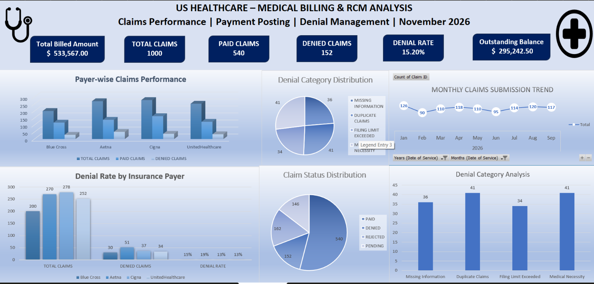

EXCEL PORTFOLIO PROJECT | 2026
An Excel-based learning project focused on healthcare claims performance, payment posting, patient insurance information and denial management using 1,000 simulated healthcare claim records.
Training project using simulated data. No real patient or payer information is included.
01 / PROJECT OVERVIEW
This project demonstrates the use of Microsoft Excel to organise healthcare claims data, review payment information, analyse denials and present operational metrics through an interactive-style dashboard.
Total Claims
Total Billed Amount
Paid Claims
Denied Claims
The workbook uses simplified assumptions for learning and portfolio demonstration.
02 / EXCEL DASHBOARD
A visual summary of claim performance, payer comparisons, denial categories, claim status and monthly claim volumes.

Excel Dashboard | November 2026
03 / PROJECT WORKFLOW
Structured claim-level information including patient ID, payer, service date, billed amount and claim status.
Validation checks for missing information, duplicate claim IDs and record completeness.
Analysis of billed amounts, allowed amounts, insurance payments, adjustments and balances.
Categorisation of denied claims, root cause identification and suggested corrective actions.
Practice dataset covering patient information, insurance plans and eligibility status.
Summary metrics, PivotTables and charts to communicate claim performance.
04 / PROJECT FILES
Download the workbook to review the claims register, validation checks, payment posting, denial management and dashboard.
Download Excel Workbook